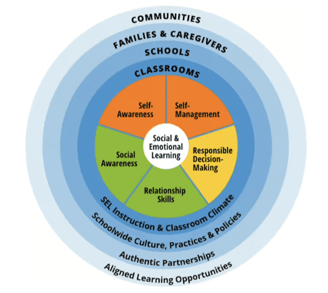

Best AI Website Creator
SEL 是「社會情緒學習」（Social and Emotional Learning）。它幫助我們認識和管理情緒、理解他人、建立良好關係，並做出負責任的選擇。這些能力可以透過日常練習慢慢培養，沒有年齡限制，也不需要一次就做得完美。

分組報告快到了，你傳訊息詢問組員的簡報進度。他已讀兩小時沒有回覆，卻更新了和朋友出遊的限時動態。你越看越著急……
有人把同學接力賽掉棒的照片做成嘲笑梗圖，傳進班級群組。大家紛紛留言「笑死」，你的朋友也按了笑臉。如果你在群組裡，會怎麼做？
你在群組認真詢問考試範圍，好朋友只回了一個讓你覺得敷衍的表情符號。其他人沒有回應，你開始懷疑自己是不是被討厭了。
Best AI Website Creator